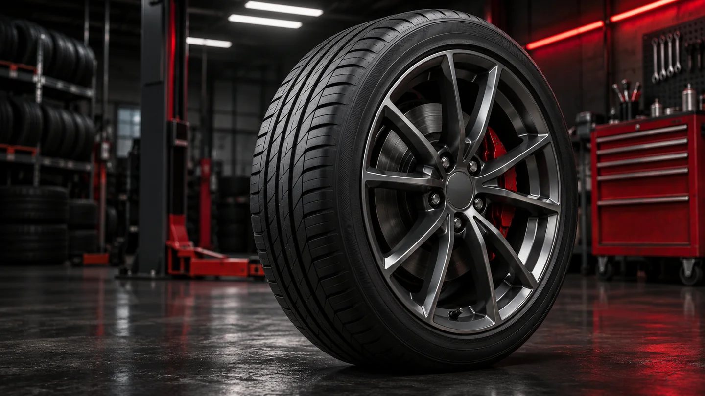
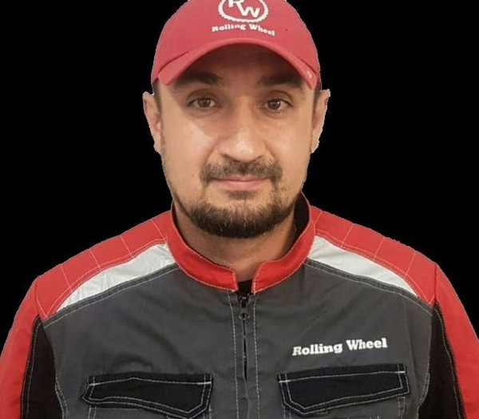

Шиномонтаж
Колёса R12–R24, низкий профиль и RunFlat.

Rolling Wheel · Екатеринбург
Сезонная замена шин, ремонт колёс и дисков. Три мастерские в Екатеринбурге.
Что делаем
Шины, колёса и обслуживание автомобиля
Колёса R12–R24, низкий профиль и RunFlat.
Балансировка колёс на 3D оборудовании СИВИК.
Правка литых и прокатка стальных дисков.
Вулканизация и ремонт с кордовым пластырем.
Дробеструйная обработка и порошковая покраска.
Сезонное хранение шин и колёс в сборе.
Комплексы для четырёх колёс, отдельные работы, хранение и покраска.
Екатеринбург
Позвоните в мастерскую или откройте маршрут.
Круглосуточно
Круглосуточно
Круглосуточно
О компании
Rolling Wheel начиналась с одной мастерской на Сибирском тракте. Сегодня в мастерских меняют шины, балансируют колёса, ремонтируют и красят диски, обслуживают кондиционеры и принимают колёса на хранение.
История Rolling Wheel
Из архива
Мастерская представила дробеструйную обработку и полимерно-порошковую покраску с выбором цвета.
В мастерских Rolling Wheel появилась услуга установки ремонтных шипов.